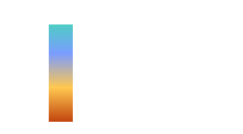

∆v Heatmap
The colour scale that turns ∆v numbers into a picture you can read at a glance.

101 · zoom in
The whole point of a porkchop plot is the colours. Numbers in a giant grid would tell you the same thing, but you couldn't see the patterns. So we paint each cell — cool teal for cheap trajectories, yellow for borderline, orange and red for hopelessly expensive. Pattern recognition takes over from arithmetic.
Cool teal sits at around 3 km/s of ∆v — what an actual Hohmann to Mars costs. Blue around 5 km/s — affordable, slightly faster trips. Yellow around 7 km/s — getting expensive, you're paying for speed. Orange and red beyond 9 km/s — you've left the realm of what current rockets can practically deliver. The colour-to-cost mapping is consistent across all the porkchops in /plan.
Hovering any cell shows you the exact ∆v in km/s, but the visual story is the eye-trick that makes porkchops indispensable. You can scan the chart in one second and know whether a destination is reachable, when the windows are, and what the trade-offs cost. No formula does that.
Cool teal sits at low ∆v (~3 km/s) — the natural Hohmann minimum. Blue at ~5 km/s. Yellow around 7 km/s — the threshold of expensive. Orange and red above 9 km/s — runaway-cost cells, where you'd need an SLS-class launch vehicle just to make the math close.
Orrery's scale tops out around 11+ km/s. Anything beyond that is rendered as the deepest red because in practice no current launch vehicle can deliver the payload at those ∆v costs. Voyager 1 launched at C3 ≈ 99 km²/s² (V∞ ≈ 10 km/s) — already near the limit of what was flyable in 1977.
On `/plan` you can hover any cell to see the exact ∆v in km/s. The heatmap is a visualisation of the answer; the cell value is the answer itself.
SEE IN THE APP
- /plan Cell colour on the porkchop maps to ∆v
LEARN MORE
- intro Wikipedia · Delta-v